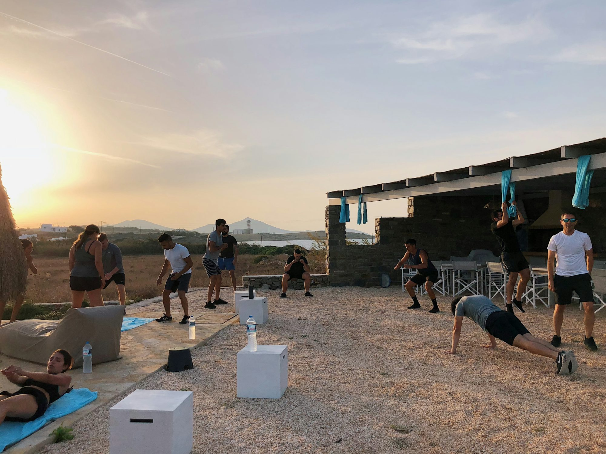
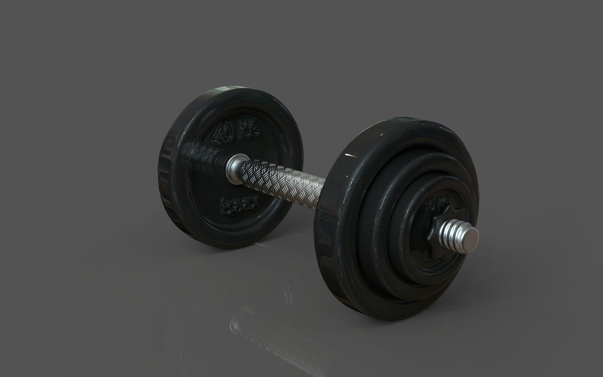

Unlocking the Benefits of Functional Fitness: A Comprehensive Guide
This article explores functional fitness, its benefits, and practical ways to incorporate it into your workout routine for improved strength and mobility.
Article hub
Maximizing Athletic Performance Through Nutrition: The Ultimate Guide
This article explores the critical role of nutrition in enhancing athletic performance, providing actionable tips and food choices for athletes.
Ella Martinez
21/02/2025
The Power of Group Fitness: Building Community and Motivation
This article explores the benefits of group fitness classes, highlighting how they foster community, enhance motivation, and contribute to overall well-being.
Emma Roberts
Fueling Fitness: The Essential Guide to Pre- and Post-Workout Nutrition
Discover the importance of proper nutrition before and after workouts, including essential food choices that enhance performance and recovery.

Maya Roberts
20/10/2025
The Path to Wellness: Crafting Your Personal Fitness Journey
This article delves into the various dimensions of fitness, offering insights on how to create a personalized workout routine that aligns with your lifestyle and wellness goals.
06/04/2025